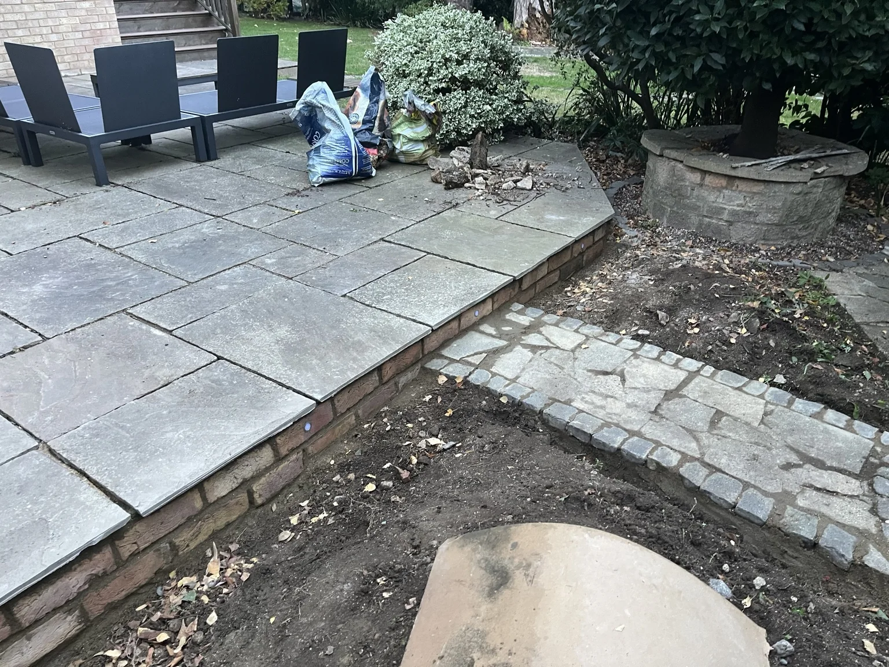
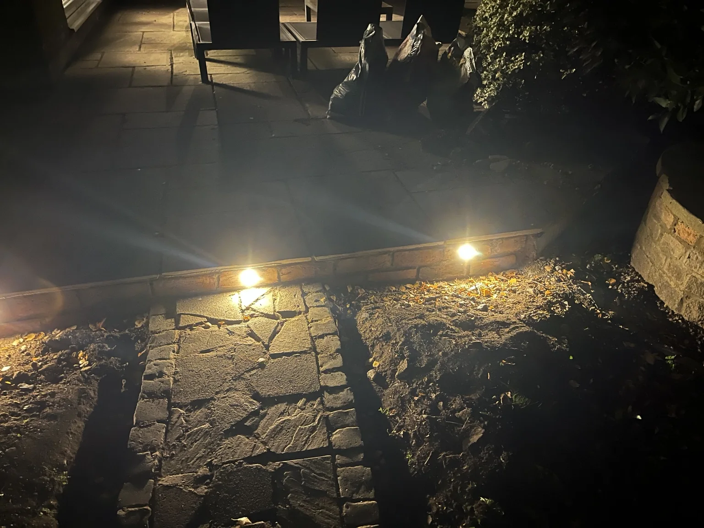

Practical first
Start with useful features that can be installed, tested and improved.
An independent garden technology project
What if your garden could do more than look good? Garden Control Centre is an evolving project exploring how practical technology can make outdoor spaces easier to care for, more responsive and more enjoyable.
Garden Control Centre started with a simple question: can accessible, affordable technology help a garden look after itself?
The idea is to connect the physical garden with a small, adaptable control system — beginning with lighting, then building towards sensors, useful insights and eventually more automated care.
This isn't a finished off-the-shelf product. It's a working concept, being built, tested and refined in a real outdoor space, with the lessons shared along the way.
Start with useful features that can be installed, tested and improved.
Use accessible hardware and software that can grow with the garden.
Use real conditions and garden context to inform better decisions.
At the heart of the prototype is a Raspberry Pi. It connects software to physical hardware, giving the project a flexible foundation for controlling lights and reading garden conditions.
The goal is to make the system understandable and extendable — not hide everything behind a sealed black box.
View the project repository ↗Illustrative system overview based on the current prototype configuration.
These are real snapshots of the build: the garden work, the lighting tests and the electronics being assembled. The prototype is deliberately being developed in stages.
 REAL GARDEN · NIGHT TEST
REAL GARDEN · NIGHT TESTWarm-white LED lights have been fitted into the brick-faced patio edge and tested at night. The garden itself is the test environment for the project.
Actual project photograph · lighting test. LIGHTING CONTROL
LIGHTING CONTROLA four-channel Mosfetti MOSFET driver is connected to the Pi's GPIO pins. The current mapping assigns channels A–D to GPIO18, GPIO17, GPIO27 and GPIO22.
Actual project photograph · output channels being tested. SENSING
SENSINGThe prototype wiring is being transferred from temporary connections to a more permanent perfboard layout. This is the hands-on work behind making the controller more robust and maintainable.
Actual project photograph · hand-wired prototype board.


The important part isn't just the hardware. It's the process of getting the Pi configured, making the wiring reliable, testing readings, writing control code and learning what needs to change next.
See the code on GitHub ↗
Actual garden · work in progress
The current web app brings garden lighting controls, condition readings, schedules and health insights into a mobile-friendly interface. These are screenshots from the live Garden Control Centre dashboard.


The interface is already taking shape. The wider project is still a prototype: the readings and statuses shown in these screenshots should not be interpreted as proof that every sensor feed, recommendation or automation is fully connected and production-ready.
Open the live dashboard ↗The prototype is a starting point, not a promise of finished features. These are possible directions to explore as the hardware and software mature.
Control different lighting zones, experiment with schedules and build more useful ways to set the scene.
Collect soil-moisture and temperature readings, understand how they change, and make the data useful.
Combine soil readings with rainfall forecasts to suggest when watering might be useful — with sensible safeguards.
The first mobile-friendly interface is live. Next steps are to refine the experience and strengthen the connection between the dashboard, sensor readings and reliable hardware control.
↳ These are development ideas, not claims that all features are available today. Reliability, safety, usability and real garden conditions will shape what gets built.
Garden Control Centre is still evolving, and that's part of the point. If you're interested in garden automation, sensors, accessible technology or helping shape what comes next, I'd love to hear from you.
Interested in collaborating, testing an idea or simply following the journey? Start a conversation through the project repository.